This algorithm starts by looking for integer powers of base. If that
doesn't provide enough breaks, it then looks for additional intermediate
breaks which are integer multiples of integer powers of base. If that fails
(which it can for very small ranges), we fall back to extended_breaks()
breaks_log(n = 5, base = 10)
Arguments
| n | desired number of breaks |
|---|---|
| base | base of logarithm to use |
Details
The algorithm starts by looking for a set of integer powers of base that
cover the range of the data. If that does not generate at least n - 2
breaks, we look for an integer between 1 and base that splits the interval
approximately in half. For example, in the case of base = 10, this integer
is 3 because log10(3) = 0.477. This leaves 2 intervals: c(1, 3) and
c(3, 10). If we still need more breaks, we look for another integer
that splits the largest remaining interval (on the log-scale) approximately
in half. For base = 10, this is 5 because log10(5) = 0.699.
The generic algorithm starts with a set of integers steps containing
only 1 and a set of candidate integers containing all integers larger than 1
and smaller than base. Then for each remaining candidate integer
x, the smallest interval (on the log-scale) in the vector
sort(c(x, steps, base)) is calculated. The candidate x which
yields the largest minimal interval is added to steps and removed from
the candidate set. This is repeated until either a sufficient number of
breaks, >= n-2, are returned or all candidates have been used.
Examples
#> scale_x_log10()#> scale_x_log10()#> scale_x_log10(breaks = breaks_log(6))#> scale_x_log10()#> scale_x_log10()#> scale_x_log10(expand = c(0, 0))#> scale_x_log10()